scene0568_02 Diagnostic GT projections. Red points are NOT masks. Approximate visibility uses vertex and sparse scan z-buffers. Unknown depth is not verified visibility.
Instance 0: 03211117 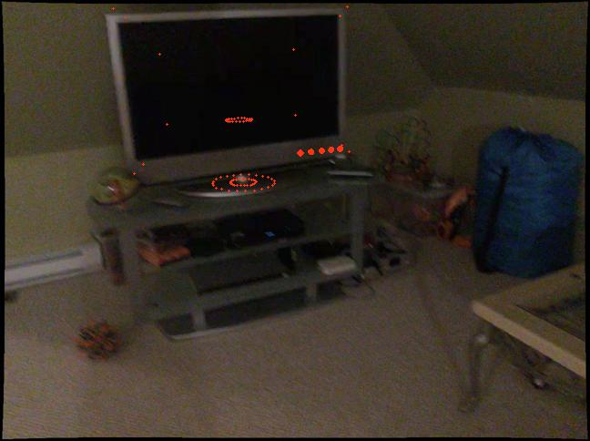
00259: frustum=294, approx=264 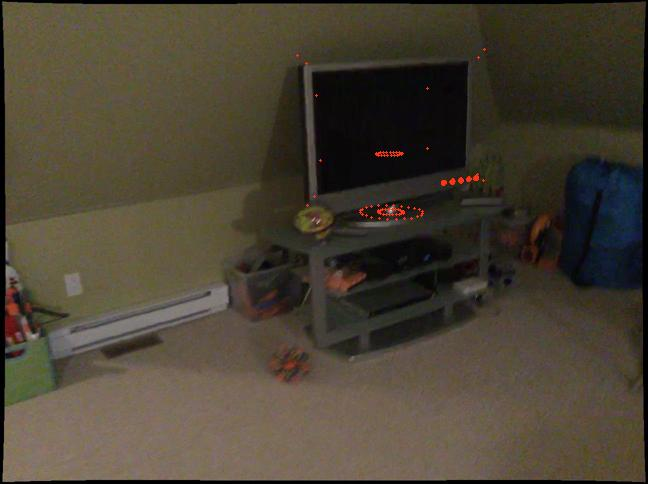
00247: frustum=294, approx=258 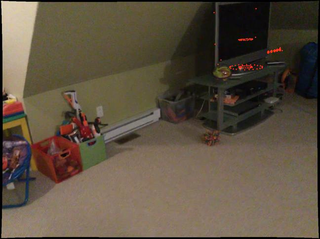
00235: frustum=290, approx=250 Instance 1: 04379243 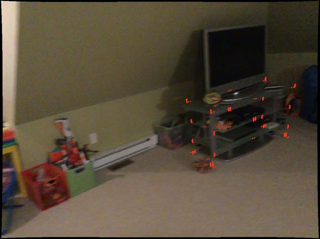
00240: frustum=338, approx=229 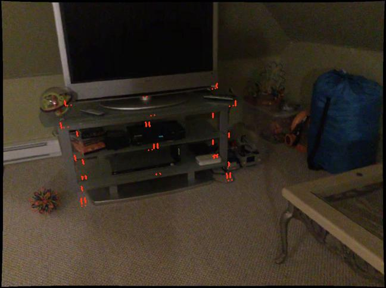
00262: frustum=338, approx=191 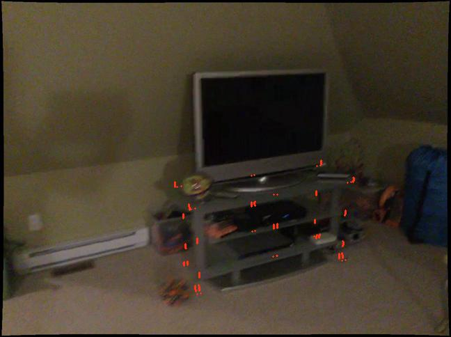
00249: frustum=338, approx=173 Instance 2: 04379243 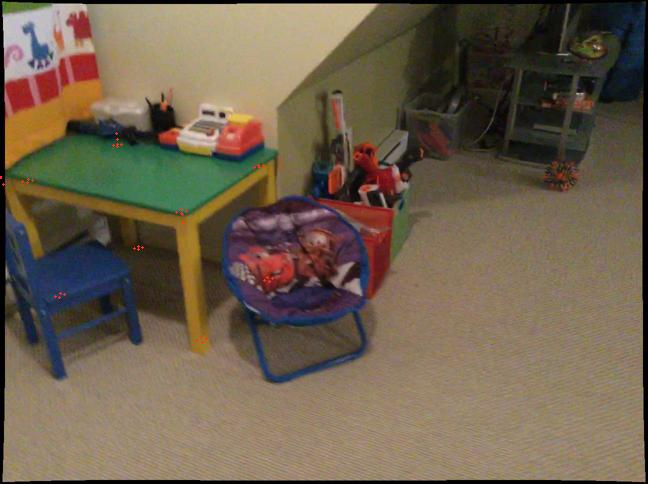
00220: frustum=40, approx=26 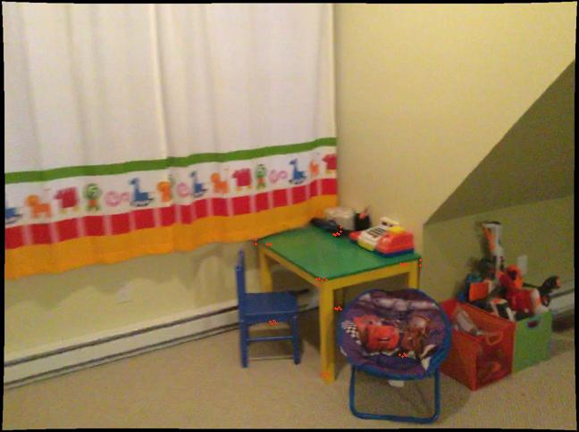
00190: frustum=40, approx=20 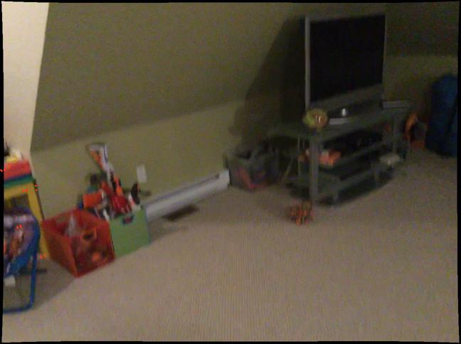
00237: frustum=20, approx=10 Instance 3: 02871439 00076: frustum=136, approx=75 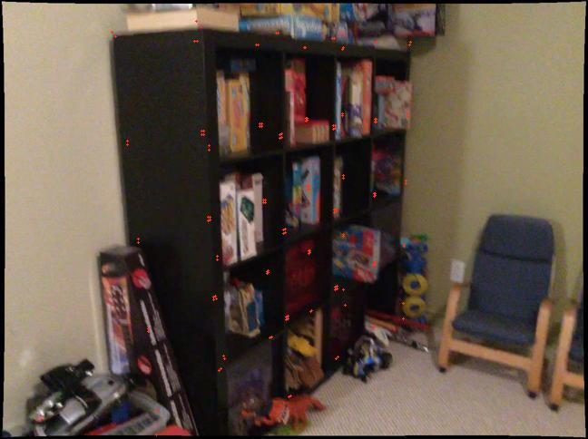
00097: frustum=134, approx=69 Instance 4: 04379243 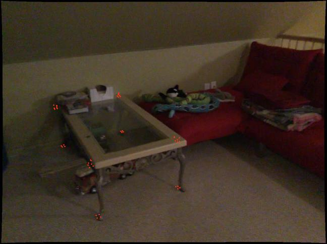
00011: frustum=44, approx=44 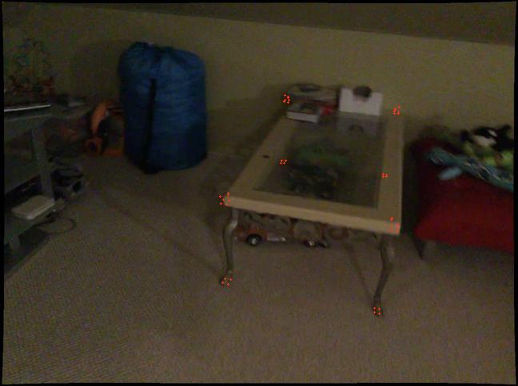
00282: frustum=44, approx=43 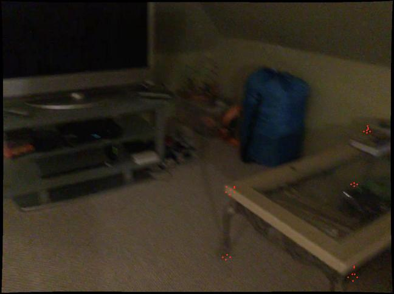
00263: frustum=29, approx=27 Instance 5: 03001627 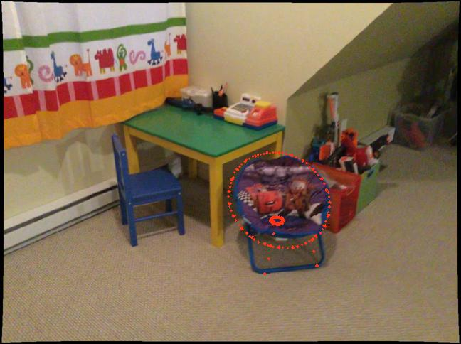
00206: frustum=5152, approx=5110 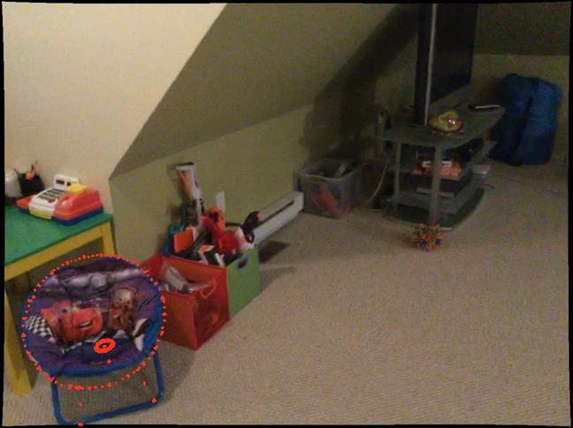
00227: frustum=5152, approx=5084 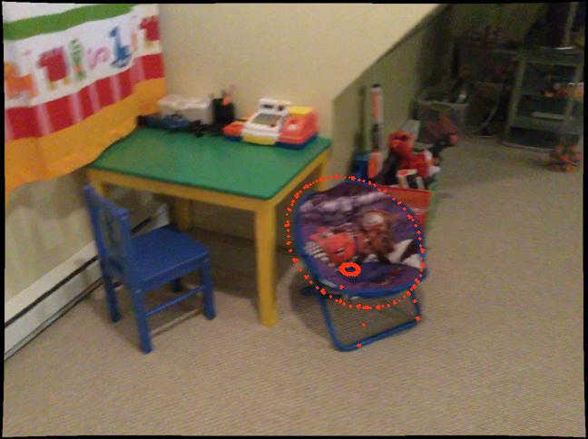
00218: frustum=5152, approx=5080 Instance 6: 02871439 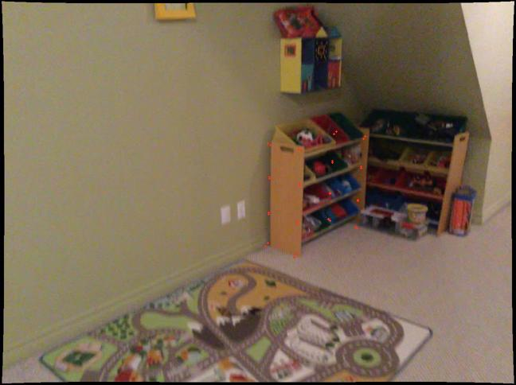
00161: frustum=32, approx=23 Instance 7: 02871439 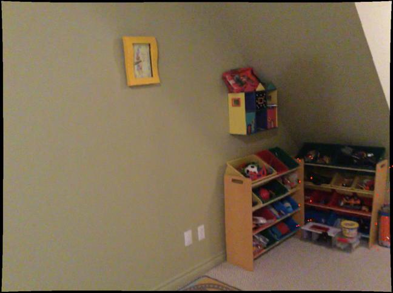
00165: frustum=32, approx=13 Instance 8: 03001627 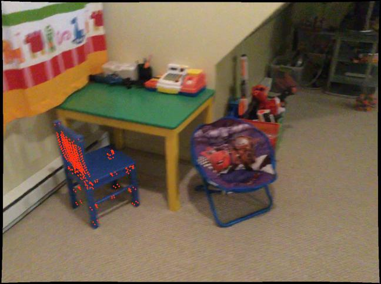
00218: frustum=584, approx=568 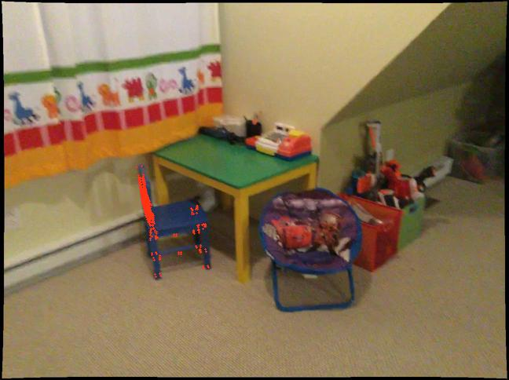
00203: frustum=584, approx=319 Instance 9: 03001627 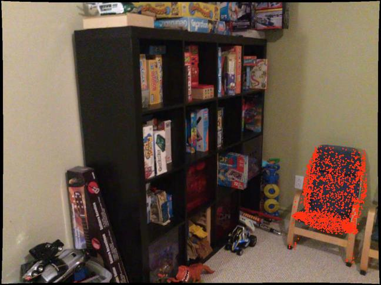
00095: frustum=19991, approx=12854 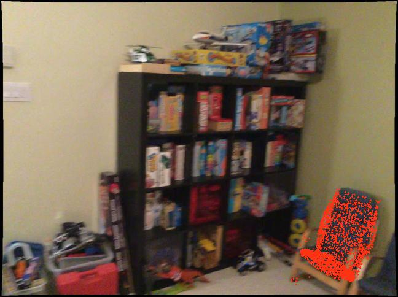
00079: frustum=19922, approx=12289 Instance 10: 03001627 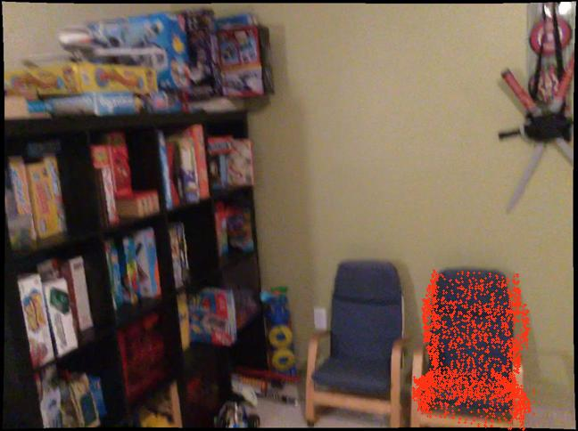
00126: frustum=19881, approx=15105 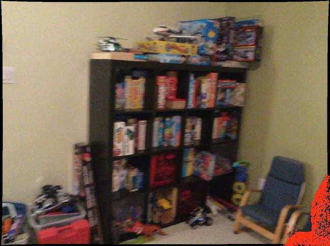
00080: frustum=7795, approx=5886 Instance 11: 04256520 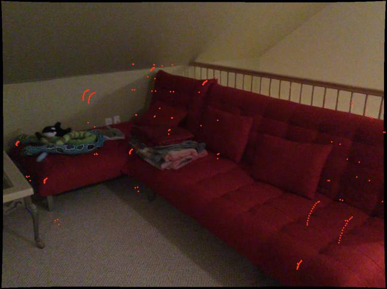
00296: frustum=198, approx=177 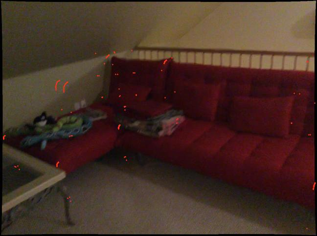
00023: frustum=163, approx=139 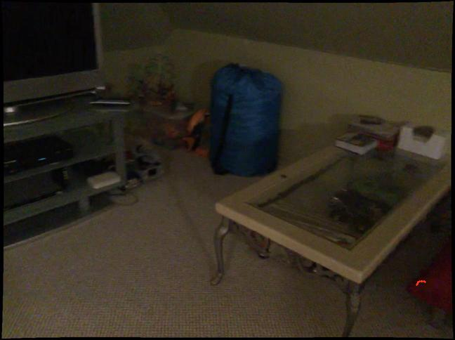
00265: frustum=13, approx=13